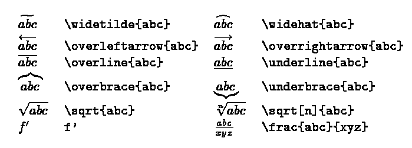

Čo to je?
Wikina by povedala, že to je systém na prípravu dokumentov a taktiež značkovací jazyk dokumentov. Ale teraz zrozumiteľne. Je to "looking awesome" word, ktorý vám zjednoduší toľko vecí (a taktiež zopár sťaží, ale nič závažné) že si ho nebudete vedieť vynachváliť a písať už nebudete chcieť v ničom inom!
Chcem podotknúť, že to čo budem opisovať ďalej v článku je LaTeX, s ktorým sa oproti TeX-u uľahčí prácu (v prípade záujimu "ako je to naozaj" sa kukni na LaTeX Wikipedia).
Pre navnadenie /alebo odradenie/ tu máme rýchly "nákuk" ako LaTeX vlastne vyzerá. Špeciálne znaky sa pridávajú '\' a nejakým názvom funkcie. Normálny text sa píše bežne ako v notepade. 
Načo keď mám Word?
Dôvody:
- Lebo to vyzerá neskutočne dobre.
- Technické a prírodovedecké vecičky sa v tom píšu la-ho-dne.
- Nemusíte už nikdy riešiť číslovanie.
- Lebo vám to v budúcnosti MOC pomôže.
- Lebo budete vytŕčať z radu.
P.S. - NETREBA sa toho báť. Na začiatku to vyzerá strašne, ale vyskúšate si v tom chvíľku pár vecí a zrazu to pôjde od ruky. A netreba zabúdať, že vždy je tu strýko Google. Takže už vieme, že do toho chceme ísť. Ale čo pre to spraviť?
Quick installation quide
I. Systém
1. Stiahni si MikTeX. (pozn. stačí basic) 2. Spusti inštaláciu. -> 2.1 V okne Shared installation vyber možnosť all users. -> 2.2 Installation directory - nechaj defaultné. -> 2.3 V okne Settings vyber papier A4 a Install missing packages on-the-fly: Ask me first. 3. Inštalácia dobehne. 4. A kedže sme slováci, tak nám treba zmeniť jazyk - Language. -> 4.1 Štart -> MiKTeX 2.9 -> Maintenance (údržba) -> Settings (nastavenia). -> 4.2 Languages karta. -> 4.3 slovak. -> 4.4 Ostáva už len OK. 5. Zopakujeme bod 4.1. -> 5.1 Packages karta. -> 5.2 slovak. -> 5.3 V tomto momente potrebuješ byť pripojený na net, pretože sa budú sťahovať rôzne balíčky. -> 5.4 Ostáva už len OK. -> 5.5 Počkať a potom Close.
II. Editor
Ešte nám treba nejaký editor, aby sa nám robilo pohodlne. Kľudne si vyberte hocičo, ale ako sa vraví - v jednoduchosti je krása a mne (možno aj nám :D) sa overil Texmaker. Nebola by v tom "krása", keby netrebalo niečo nastavovať (v tomto prípade však len pre jednoduchšiu prácu s programom). Takže we shall begin:
1. V samotnom Texmakery - Voľby -> Nastaviť TeXmaker -> Rýchly preklad a tam zaškrtnúť pdfLaTeX + Zobraziť PDF (týmto sa stane F1 zázračným tlačidlom na rýchly náhľad vytváraného dokumentu). 2. Voľby -> Nastaviť TeXmaker -> Editor a tam Kódovanie písma nastaviť na windows-1250. 3. Reštart a je to.
Teraz už len hrrr na dokument
Ja si myslím, že najlepšie je začať príkladmi a učiť sa na nich. A postupne sa cez Google učiť príkazy, ktoré nevieme. Prvý dokument by mohol vyzerať typicky napr. "Hello Word". Krásne je všetko možné popísané na LaTeX Wikibook. Dá sa tam nájsť všetko, čo človek potrebuje ku šťastnému nažívaniu s týmto úźasnym programom - fakt všetko. Youtube channel LaTex Tutorials s pomaličkým postupným vysvetľovaním "ako na to" nám príde tiež veľmi fajn. Určite vás čo chvíľka napadnú nejaké laškovania s typom fontu, veľkosťami okrajov a takýmito formátovacími vecičkami. Na už vyššie spomínanom LaTeX Tutorials sa dá všetko dohľadať a nápomocná môže byť aj stránka, kde sa nachádzajú Templates aj rovno so všetkými potrebnými súbormi. Ostáva už len skúšať. A keď si s niečím naozaj nebudete dať vedieť rady, tak nás kontaktujte (napr. FB) a ono sa to nejako vyrieši.